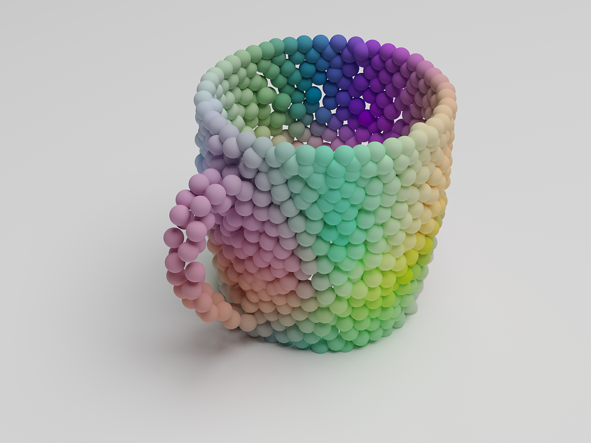
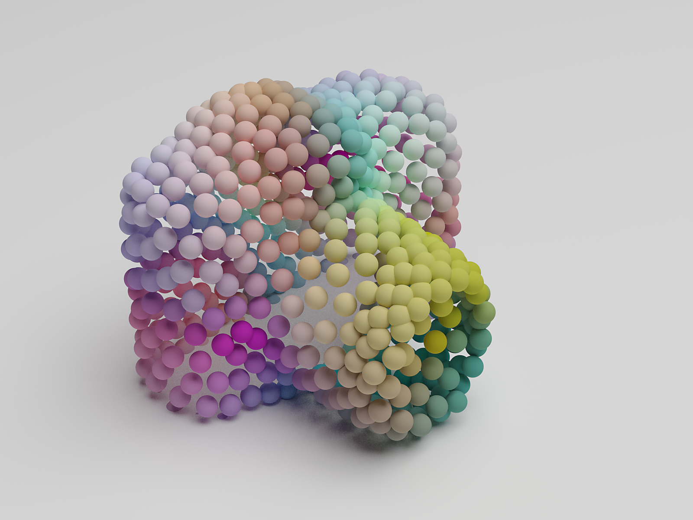

Method at a glance
How it works
- 01Validate the inputsFilter invalid depth and masks, apply category exclusions, and align canonical coordinates and scale across datasets.
- 02Build category priorsFit linear shape models from sampled object surfaces and reconstruct instance shapes within each category.
- 03Aggregate semanticsExtract DINOv3 features and form category-average descriptors when the test instance identity is unavailable.
- 04Train across datasetsMix PACE and Omni6DPose with dataset-specific preprocessing and resampled training subsets.
Project workflow schematic.
Task: pose estimation beyond known instances
Category-level 6D pose estimation asks a model to recover rotation, translation and object size for an instance it has not seen during training. Partial views, occlusion and variation within a category make this harder than matching a known CAD model. The ICCV 2025 challenge brought those issues together with heterogeneous real and synthetic data.
My submission built on GCEPose and combined category-level geometric priors with DINOv3 semantic features. The work received first prize in the Workshop Challenge on Category-Level Object Pose Estimation in the Wild. The underlying pose architecture is credited to the original authors; the challenge integration, data preparation and training workflow are the focus here.
My contribution
I worked on making PACE and Omni6DPose usable in one training pipeline. This included filtering invalid samples, checking whether masked depth supported the object geometry, preparing reusable validation metadata, aligning NOCS coordinate conventions and scale, and handling dataset/category exclusions. These were substantive model-input problems: incorrect canonical coordinates can make a visually plausible sample provide the wrong pose target.
I also built the category-prior workflow. Instance mesh surfaces were sampled for DeepLinearShape training; reconstructed instance shapes and category models were associated with DINOv3 features; and category-average semantic descriptors were prepared for testing when exact instance identity was unknown.
For training, I implemented a mixed-dataset wrapper with unified indexing and dataset-specific routing, then used resampled subsets to keep large-scale experiments manageable. Optimizer scheduling, checkpoint selection and comparative validation completed the experimental workflow.
Architecture and method
GCEPose follows a complete-then-aggregate strategy. Its Semantic Shape Reconstruction module uses category-specific 3D semantic prototypes and a learned deep linear shape model to infer global geometry and semantics from partial RGB-D observations. A Global Context Enhanced fusion module combines those reconstructed priors with features from the observed object.
The challenge workflow supplies geometric and semantic category information through DeepLinearShape and DINOv3. The reconstructed-instance and mean-category visualizations below illustrate those priors. They are intermediate representations, not final pose overlays or a claim that the base pose architecture was designed from scratch in this project.
Data and geometric consistency
The two training sources were PACE and Omni6DPose. The archived preparation notes describe requiring sufficient valid masked depth, checking back-projected surface points, applying the exclusion list, and aligning normalized object coordinates before evaluation. Mesh surfaces were sampled uniformly to prepare instance inputs for category shape modeling.
The work exposed several failure modes: absent or inaccurate depth, disagreement between instance scale and NOCS geometry, and duplicate category labels. Coordinate transforms and scale correction were therefore treated as explicit preprocessing stages, rather than leaving the model to absorb inconsistent supervision.
Training and evaluation
Each epoch sampled a fresh subset at a fixed PACE/Omni6DPose mixing ratio, using approximately 10–20% of the full mixed data per epoch in the recorded setup. A triangular CyclicLR schedule spanned four epochs and was paired with Adam. This made checkpoint selection and iteration more frequent while preserving broad sampling over time.
Validation was tracked by dataset rather than relying only on one combined score. The presentation reports mixed trends during longer training: PACE performance could decline while other subsets improved, and NOCS alignment errors limited the system. That diagnosis motivated improvements in data consistency rather than an unsupported claim that more training always helped.
What this project demonstrates
This project combined model integration with the less visible engineering that determines whether a pose system can learn from heterogeneous data: geometric validation, canonicalization, category modeling, large-scale sample routing and controlled experimentation. Its central lesson was that stronger representations require trustworthy coordinate systems and supervision to become useful.
Project visuals




Related resources
- GCE-Pose paperOriginal complete-then-aggregate pose architecture.
- GCE-Pose project
- WCLOP ICCV 2025 workshop
Challenge integration and training work are distinguished from the original GCEPose architecture. Figures are intermediate representations from my challenge presentation.